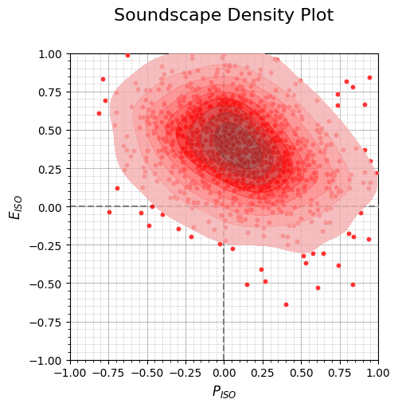
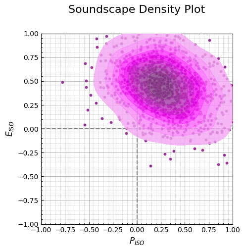

import numpy as np
import pandas as pd
import soundscapy as sspy
from soundscapy.spi import MultiSkewNorm
from soundscapy.surveys.survey_utils import LANGUAGE_ANGLES, PAQ_IDS
data = sspy.isd.load()
data, excl_data = sspy.isd.validate(data)
data = data.query("Language != 'cmn'")
excl_id = [652, 706, 548, 550, 551, 553, 569, 580, 609, 618, 623, 636, 643]
data = data.drop(excl_id)for lang in data.Language.unique():
angles = LANGUAGE_ANGLES[lang]
lang_idx = data.query(f"Language == '{lang}'").index
iso_pl, iso_ev = sspy.surveys.processing.calculate_iso_coords(
data.loc[lang_idx, PAQ_IDS], (1, 5), angles
)
data.loc[lang_idx, "ISOPleasant"] = round(iso_pl, 3)
data.loc[lang_idx, "ISOEventful"] = round(iso_ev, 3)
data.head()| LocationID | SessionID | GroupID | RecordID | start_time | end_time | latitude | longitude | Language | Survey_Version | ... | THD_THD_Max | THD_Min_Max | THD_Max_Max | THD_L5_Max | THD_L10_Max | THD_L50_Max | THD_L90_Max | THD_L95_Max | ISOPleasant | ISOEventful | |
|---|---|---|---|---|---|---|---|---|---|---|---|---|---|---|---|---|---|---|---|---|---|
| 0 | CarloV | CarloV2 | 2CV12 | 1434 | 2019-05-16 18:46:00 | 2019-05-16 18:56:00 | 37.17685 | -3.590392 | eng | engISO2018 | ... | -0.09 | -11.76 | 54.18 | 34.82 | 26.53 | 5.57 | -9.0 | -10.29 | 0.209 | -0.144 |
| 1 | CarloV | CarloV2 | 2CV12 | 1435 | 2019-05-16 18:46:00 | 2019-05-16 18:56:00 | 37.17685 | -3.590392 | eng | engISO2018 | ... | -0.09 | -11.76 | 54.18 | 34.82 | 26.53 | 5.57 | -9.0 | -10.29 | -0.443 | 0.468 |
| 2 | CarloV | CarloV2 | 2CV13 | 1430 | 2019-05-16 19:02:00 | 2019-05-16 19:12:00 | 37.17685 | -3.590392 | eng | engISO2018 | ... | -2.10 | -19.32 | 72.52 | 32.33 | 24.52 | 0.25 | -16.3 | -17.33 | 0.637 | 0.002 |
| 3 | CarloV | CarloV2 | 2CV13 | 1431 | 2019-05-16 19:02:00 | 2019-05-16 19:12:00 | 37.17685 | -3.590392 | eng | engISO2018 | ... | -2.10 | -19.32 | 72.52 | 32.33 | 24.52 | 0.25 | -16.3 | -17.33 | 0.589 | -0.092 |
| 4 | CarloV | CarloV2 | 2CV13 | 1432 | 2019-05-16 19:02:00 | 2019-05-16 19:12:00 | 37.17685 | -3.590392 | eng | engISO2018 | ... | -2.10 | -19.32 | 72.52 | 32.33 | 24.52 | 0.25 | -16.3 | -17.33 | 0.445 | -0.126 |
5 rows × 144 columns
ct = data.query("LocationID == 'SanMarco'")
x = ct["ISOPleasant"].to_numpy()
y = ct["ISOEventful"].to_numpy()
msn = MultiSkewNorm()
msn.fit(data=ct[["ISOPleasant", "ISOEventful"]])
msn.summary()
tgt_df = pd.DataFrame(
msn.sample(n=1000, return_sample=True), columns=["ISOPleasant", "ISOEventful"]
)
sspy.density(tgt_df, color="red")

msn2 = MultiSkewNorm()
msn2.define_dp(
xi=np.array([0.06534, 0.628637]),
omega=np.array([[0.14890315, -0.06423752], [-0.06423752, 0.10139612]]),
alpha=np.array([0.79105, -0.767217]),
)
msn2.sample(n=1000, return_sample=True)
msn2.summary()
tgt2_df = pd.DataFrame(
msn2.sample(n=1000, return_sample=True), columns=["ISOPleasant", "ISOEventful"]
)
sspy.density(tgt2_df, color="purple")
